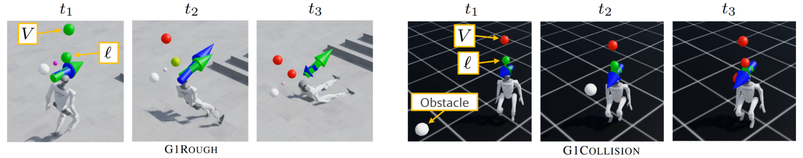

The sign
Will the policy stay safe?
For the ideal value, Vπ(x) ≤ 0 means the policy keeps the safety signal nonpositive for all future time. A positive value means a future violation.
Accepted to CoRL 2026
Learning to anticipate a humanoid’s worst future safety condition—before a fall or collision occurs.

01 / The idea in motion
A robot can look stable now and still be on a trajectory toward failure. λ-Reachability learns a safety value for a fixed policy that estimates the worst safety signal along its future trajectory.
02 / Safety value functions
The instantaneous signal ℓ tells us whether a constraint is violated now. The safety value Vπ looks along the future trajectory under the robot’s policy, capturing both whether a violation will occur and the safety margin.
Vπ(xt) = supk ≥ t ℓ(xk)
For a fixed policy π, take the largest safety signal over its entire future trajectory. λ-Reachability learns an estimate of this value.
ℓ(x): what is happening nowInstantaneous balance or collision constraint.
Vπ(x): what lies aheadWorst safety signal along the future trajectory.
The sign
For the ideal value, Vπ(x) ≤ 0 means the policy keeps the safety signal nonpositive for all future time. A positive value means a future violation.
The margin
The value locates the worst future condition relative to the zero safety threshold. A negative value closer to zero leaves less margin in the chosen safety signal.
The warning
The learned value can turn positive while the current signal is still negative, anticipating a fall or collision before the constraint is violated.

03 / The main idea
λ-Reachability learns the worst future safety signal from randomly sized trajectory segments. A geometric horizon connects short, bootstrapped updates to longer max-over-trajectory targets, so each update can bring future safety information back to the current state.
Draw n from a geometric distribution. λ controls how far the update looks into the future.
Take the maximum safety signal over the sampled trajectory segment.
Include the terminal value with probability δⁿ; otherwise use a lower-bound terminal value.
Explore the horizon
Increase λ to shift probability toward longer trajectory segments.
Beyond 100 stepsCombined probability · P(n ≥ 101) = λ¹⁰⁰
Bars show equal five-step groups; the remaining probability is reported separately above. This is the untruncated distribution. Training uses finite, truncated horizons.
A connection to undiscounted reachability. The ideal operator is a contraction for δ < 1, and its fixed point approaches the undiscounted safety value as λ → 1. These theoretical properties do not by themselves certify a learned neural model on hardware. See §3 and Appendix A
04 / Hardware demonstrations
Play a trial to watch the robot and its safety value evolve together. The animated traces show the learned monitor anticipating risk as a push or an incoming ball changes the robot’s situation.
Look for the warning before the violation. A positive learned value predicts future risk. When the blue curve crosses zero before the red curve, it anticipates a violation while the current constraint is still satisfied.
The learned value crosses zero before the instantaneous balance signal. Watch how the warning relates to the loss of balance.
Both recorded traces stay below zero as the robot recovers from the push.
The learned value becomes positive while the ball approaches. The instantaneous signal crosses zero when contact occurs.
The robot avoids contact and the instantaneous signal stays negative. Positive value predictions illustrate conservative warnings in these trials.
Use the video controls to play, pause, seek, or open both views in fullscreen. The curves replay with the camera footage at the labeled slow-motion speed. Collision timing offsets are estimated from the recorded events. Blue shading marks intervals when the learned value is positive while the current signal is nonpositive; red shading marks an observed violation. A safe outcome can still include positive predictions from the learned monitor.
@inproceedings{chen2026lambdareachability,
title = {$\lambda$-Reachability: Geometric-Horizon Safety Bellman Equations for Humanoid Safety},
author = {Rui Chen and Shangtao Li and Yifan Sun and Changliu Liu},
year = {2026},
booktitle = {Conference on Robot Learning},
url = {https://arxiv.org/abs/2606.16022},
website = {https://intelligent-control-lab.github.io/lambda_reach/},
youtube = {https://www.youtube.com/watch?v=sW9JjJ73NJ4},
code = {https://github.com/intelligent-control-lab/lambda_reach}
}Conference on Robot Learning, 2026.